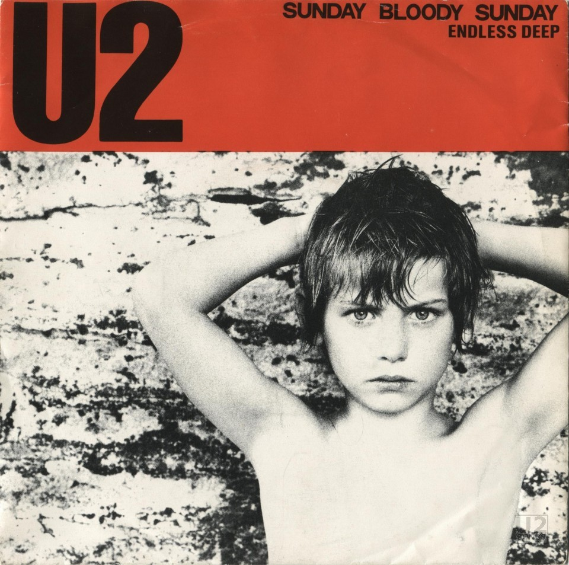

“Bloody Sunday” was an incident, which took place on 30th January 1972 in Derry, Northern Ireland where British Soldiers shot 28 unarmed civilians who were peacefully protesting against Operation Demetrius. Out of all the people who lost their life that day; Thirteen were killed outright, while another man lost his life four months later due to injuries.
The rodent issue has become New York’s latest must-experience trend. As visitors to New York demand rat action, some of the city’s tour guides have started to add stops at notoriously infested sites. “It’s crazy how much this brings people together.”
NO.TOM is a small guitar shop on Denmark Street in central London, near the Tottenham Court Road tube. The short street, once known as London’s Tin Pan Alley, was home to many music publishers and studios. Behind NO.TOM there’s a tiny 19th century cottage where the Sex Pistols once lived. It’s covered with graffiti created by the Pistols’ John Lydon (Johnny Rotten), including a drawing of the Pistols’ manager Malcolm McLaren, and another of Nancy Spungen, Sid Vicious’ girlfriend.
Grand Central has been a backdrop for romantic reunions between couples. After the terminal declined in the 1950s, it was more frequently used as a dark, dangerous place, even a metaphor for chaos and disorientation, featuring chase scenes, shootouts, homeless people, and the mentally ill. Almost every scene filmed in the terminal's train shed was shot on Track 34, one of the few platforms without structural columns blocking views."
Ellis Island is a historical site that opened in 1892 as an immigration station, a purpose it served for more than 60 years until it closed in 1954. Located at the mouth of Hudson River between New York and New Jersey, Ellis Island saw millions of newly arrived immigrants pass through its doors.